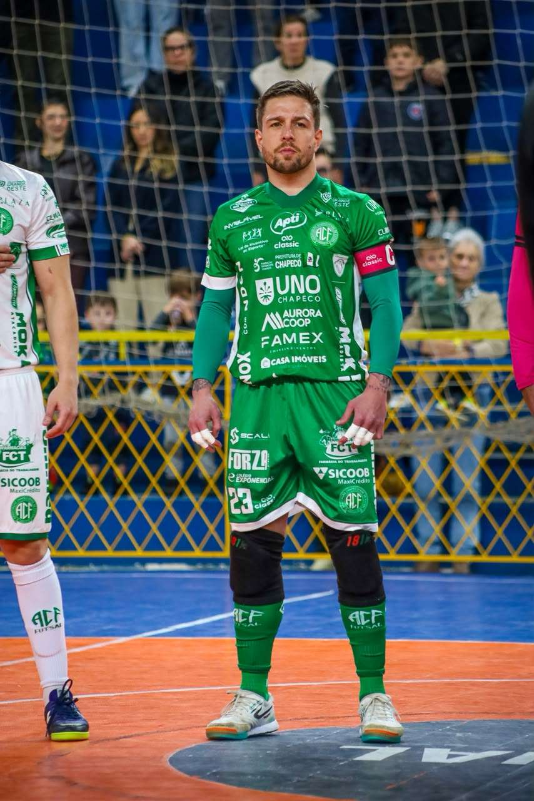

A Prefeitura de Chapecó/Chapecoense/Unochapecó mostrou força na luta por uma vaga à semifinal da Copa Santa Catarina de Futsal. Na noite desta sexta-feira (11), o Verdão das Quadras venceu o Rio do Sul por 2 a 1, fora de casa, pelo primeiro jogo entre as equipes nas quartas de final, e abriu vantagem na disputa. A classificação será decidida em Chapecó.
O time verde-branco buscava um resultado positivo no Ginásio Artenir Werner, no Alto Vale do Itajaí, para ficar em condição favorável no mata-mata. Em um confronto equilibrado, o placar foi aberto somente aos 17'48", mas valeu à pena a torcida esperar. Ximba deu um chapéu no primeiro marcador, driblou o segundo e chutou sem defesa para o goleiro. Golaço. Os anfitriões igualaram aos 19'28", com Kauê.

O confronto na cidade de Rio do Sul continuou bastante movimentada na segunda etapa. Porém, assim como na primeira, a rede foi balançada apenas no fim. Aos 16'40", Toninho recebeu o passe, limpou a marcação e soltou a bomba. Aos 19'58", Falcone viu a meta vazia – os mandantes se arriscaram no goleiro-linha – e chutou de longe, finalizando a contagem.
Com a vitória, a Chape Futsal pode empatar no duelo da volta para avançar na Copa SC. O reencontro ainda não tem data oficializada na tabela da Federação Catarinense de Futsal, mas ocorrerá no Ginásio Plínio Arlindo De Nes (SER Aurora). O Rio do Sul precisa ganhar para forçar a prorrogação, onde o empate leva a decisão aos pênaltis.
Feijoada
De Rio do Sul, a delegação do Verdão das Quadras volta direto a Chapecó para, já pela manhã, estar no pavilhão 3 da Efapi. O local sedia a 3ª Feijoada da Chape Futsal. Haverá atrações musicais, brinquedos para crianças, exposição de patrocinadores e estacionamento gratuito. Ainda há ingressos. O bilhete custa R$ 60 (adulto) e R$ 30 (de 6 a 12 anos). Crianças até 5 anos não pagam.